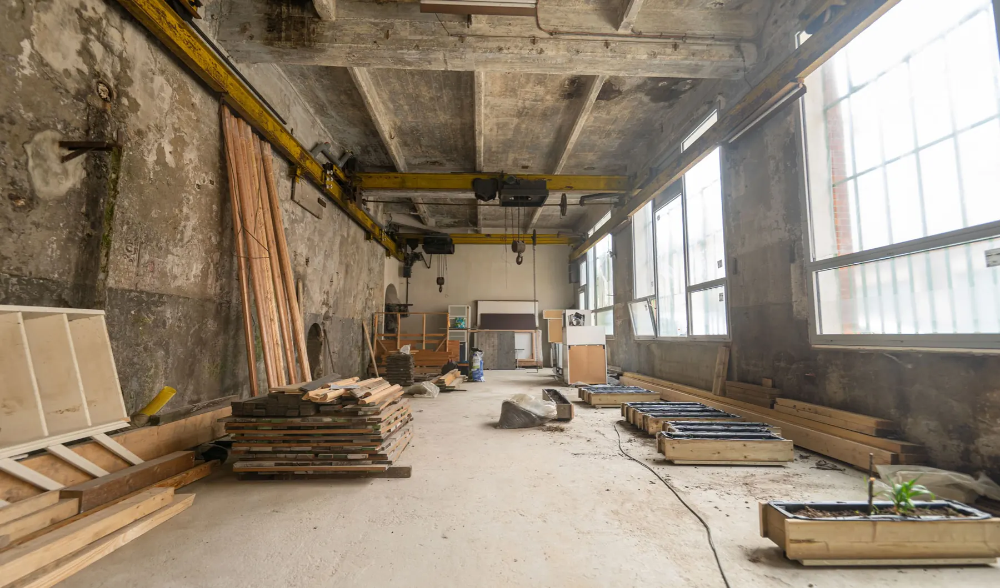

La grünboX-Vienne
01 / 05
Une usine textile de la vallée de la Gère, inoccupée depuis plus de vingt ans.
Nous y avons vu un potentiel caché. Le chantier commence par le réemploi.
Le coworking et le tiers-lieu sont aménagés avec 90 % de matériaux en réemploi.
Des logements, des bureaux, une salle pour tout le quartier.
Et partout, le végétal : terrasses vertes, serres, champignonnière.
−65 %d’empreinte carbone par rapport à du neuf